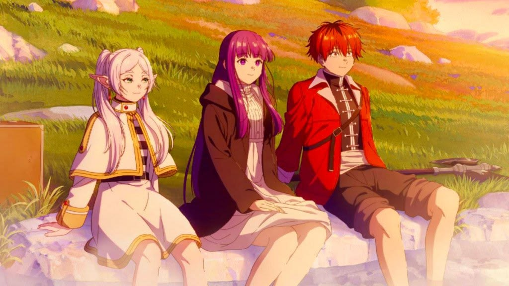
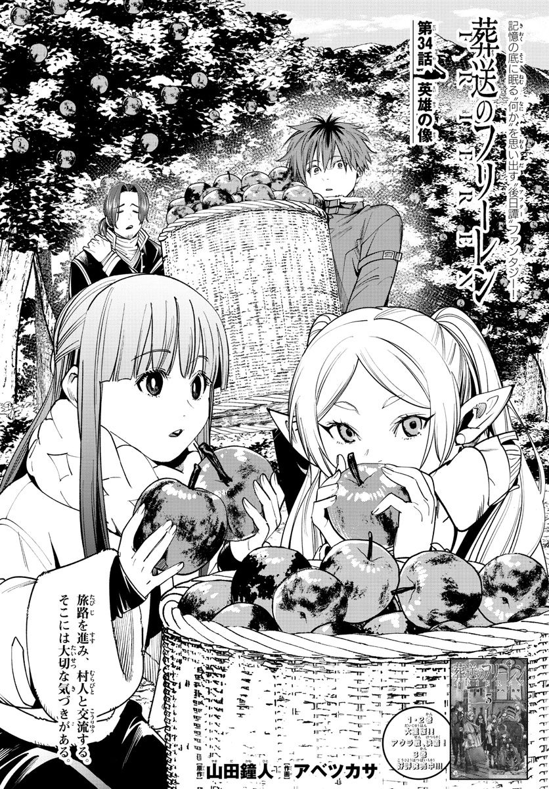
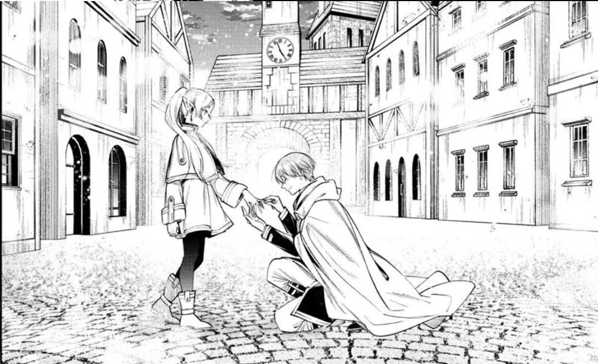

Khi cuộc phiêu lưu bắt đầu sau hồi kết
Frieren - Pháp sư tiễn táng mở đầu sau khi Frieren cùng nhóm anh hùng Himmel hoàn thành hành trình đánh bại Ma Vương. Sau mười năm đồng hành, mỗi người lựa chọn một con đường riêng. Là một nữ elf có tuổi thọ hàng trăm năm, Frieren không cảm nhận mười năm ấy giống như những người bạn đồng hành của mình.
Chỉ đến khi Himmel qua đời, Frieren mới nhận ra mình chưa từng thực sự hiểu người đồng đội đã dành cả một thập kỷ bên cạnh cô. Từ nhận thức ấy, cô bắt đầu một hành trình mới - không còn là cuộc phiêu lưu để cứu thế giới, mà là hành trình tìm hiểu con người và những ký ức đã bị thời gian bỏ lại.

Một nhịp kể chậm nhưng có chủ đích
Điểm đặc biệt của manga nằm ở cách tác giả không vội vàng đẩy câu chuyện về phía trước. Những chuyến đi, cuộc trò chuyện hay nhiệm vụ tưởng chừng đơn giản đều được khai thác để làm rõ tính cách nhân vật.
Quá khứ và hiện tại liên tục đan xen, khiến những ký ức về Himmel và nhóm anh hùng dần mang thêm nhiều ý nghĩa khi Frieren trưởng thành hơn trong cách nhìn nhận thế giới. Những điều từng được xem là nhỏ bé đôi khi lại trở thành ký ức quan trọng nhất.
Những nhân vật được xây dựng từ những điều rất đời thường
Frieren là một nhân vật đặc biệt. Cô sở hữu sức mạnh và kinh nghiệm vượt xa nhiều nhân vật khác, nhưng lại thiếu khả năng thấu hiểu cảm xúc của con người. Sự đối lập này khiến hành trình của cô không chỉ là hành trình khám phá thế giới mà còn là quá trình học cách quan tâm và trân trọng những người đang ở bên mình.
Bên cạnh Frieren, Fern và Stark góp phần tạo nên sự cân bằng cho câu chuyện. Mối quan hệ giữa ba nhân vật phát triển qua những tương tác đời thường thay vì những xung đột liên tục. Chính những khoảnh khắc nhỏ ấy khiến nhóm nhân vật trở nên gần gũi và giúp hành trình qua nhiều vùng đất không bị đơn điệu.
Khi thời gian trở thành nhân vật của câu chuyện
Điều đáng nhớ nhất ở Frieren là cách manga nói về thời gian. Với Frieren, hàng chục năm có thể chỉ là một khoảng thời gian ngắn, trong khi với con người, đó có thể là cả một đời. Sự khác biệt ấy khiến những cuộc gặp gỡ, lời nói hay kỷ niệm tưởng như bình thường trở nên đáng giá hơn khi nhìn lại.
Không quá chú trọng vào những màn cao trào liên tiếp, Frieren - Pháp sư tiễn táng lựa chọn kể một câu chuyện nhẹ nhàng về thời gian, ký ức và sự trưởng thành. Đây là manga dành cho những độc giả yêu thích fantasy nhưng muốn tìm kiếm nhiều hơn một cuộc phiêu lưu: một câu chuyện để chậm lại và nhận ra giá trị của những người từng bước đi bên mình.
